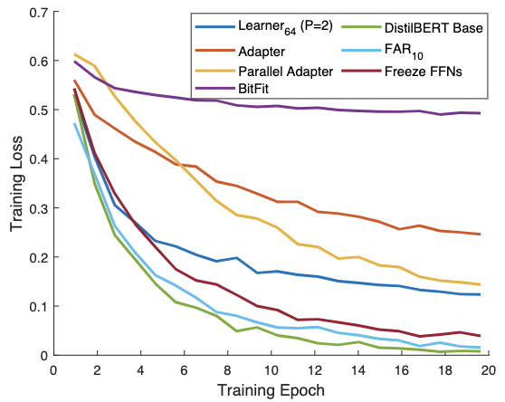
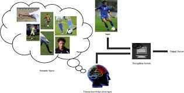

Maryam Zia
I am a Research Engineer at Unity. I develop machine learning models that advance our understanding of complex systems and enable innovative solutions in the field of AI.
My research interests lie at the intersection of machine learning, computer vision, and natural language processing, with a current emphasis on the subject of designing efficient large language models.
|

|
Efficient Fine-Tuning of Compressed Language Models with Learners
D. Vucetic, M. Tayaranian, M. Ziaeefard, J. J. Clark, B. H. Meyer, W. J. Gross ICML 2022 (Workshop). |
|
|
Conjugate Adder Net (CAddNet) - A Space-Efficient Approximate CNN
L. Shen, M. Ziaeefard, B. H. Meyer, W. J. Gross, J. J. Clark CVPR 2022 (Workshop). |
|
|
CES-KD: Curriculum-based Expert Selection for Guided Knowledge Distillation
I. Amara, M. Ziaeefard, B. H. Meyer, W. J. Gross, J. J. Clark ICPR 2022. |

|
Efficient Fine-Tuning of BERT Models on the Edge
D. Vucetic, M. Tayaranian, M. Ziaeefard, J. J. Clark, B. H. Meyer, W. J. Gross ISCAS 2022. |
|
|
|
|
ConceptBert: Concept-Aware Representation for Visual Question Answering
F. Garderes, M. Ziaeefard, B. Abeloos, and F. Lecue EMNLP 2020. (Previously \#1 on the OK-VQA dataset leaderboard). (Code) |
|
|
Hierarchical Feature Map Characterization in Fashion Interpretation
M. Ziaeefard, J. Camacaro, and C. Bessega CRV 2018. |
|
|
Deep Uncertainty Interpretation in Dyadic Human Activity Prediction
M. Ziaeefard and R. Bergevin ICMLA 2019. |
|
|
Integration of Uncertainty in the Analysis of Dyadic Human Activities
M. Ziaeefard and R. Bergevin CRV 2016. |
|
|
Time-slice Prediction of Dyadic Human Activities
M. Ziaeefard , R. Bergevin, and LP Morency BMVC 2015. |
|

|
Semantic Human Activity Recognition: A Literature Review
M. Ziaeefard and R. Bergevin Pattern Recognition Journal 2015. |
|
|
Human Action Recognition by RANSAC Based Salient Features of Skeleton History Image Using ANFIS
a1, M. Ziaeefard and H. Ebrahimnezhad MVIP 2010. |
|
|
Hierarchical Human Action Recognition by Normalized-Polar Histogram
M. Ziaeefard and H. Ebrahimnezhad ICPR 2010. |
Academic background:
I am presently affiliated with the McGill Edge Intelligence Lab (MEIL) working with Profs. Warren Gross, Jim Clark, and Brett H. Meyer. I initially joined MEIL as a Research Associate in August 2020. In this role, my responsibilities encompassed executing key long-term project objectives, nurturing strong relationships with internal and external stakeholders, and providing guidance to students and postdocs.
My academic journey includes a Ph.D. obtained from the Computer Vision Lab within the Department of Electrical and Computer Engineering at Laval University, Canada. My doctoral research focused on predicting human activities with uncertainty from brief video segments.
Additionally, I spent a semester as a researcher at the University of Southern California, working under the supervision of LP Morency in the MultiComp Lab. Our primary project involved predicting dyadic human activities from partially observed video data.
Industrial background:
My professional journey commenced at Stradigi AI, followed by my tenure at Thales Canada Inc. as a Research & Technology Lead in AI. During this time, my focus revolved around designing, executing, and analyzing experiments, with the goal of either developing new products, processes, or commercial applications, or contributing to the advancement of scientific knowledge. Subsequently, in November 2021, I transitioned to Unity as a Senior Applied Scientist.